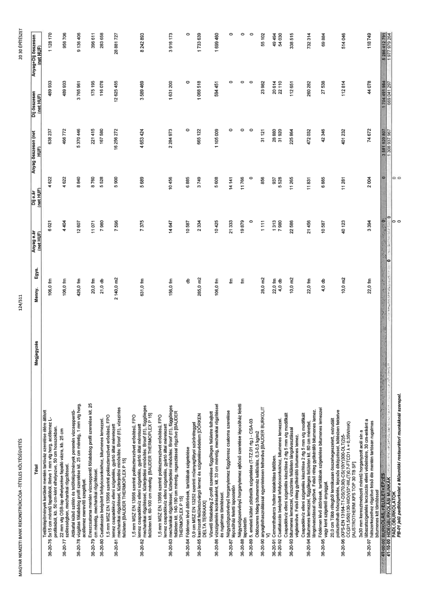

| Tétel | Megjegyzés | Menny. | Egys. | Anyag e.ár (net HUF) | Díj e.ár (net HUF) | Anyag összesen (net HUF) | Díj összesen (net HUF) | Anyag+Díj összesen (net HUF) |
|---|---|---|---|---|---|---|---|---|
| 36-20-76 | Tetőfelépítmények kerülete mentén tartóváz szerelése élére állított 5x15 cm méretű fapadlóból, illetve 1 mm vtg horg. acéllemez L-profilokból, kb. 50 cm-ként elhelyezve, 50 cm hosszakban. | 106,0 | fm | 6 021 | 4 622 | 638 237 | 489 933 | 1 128 170 |
| 36-20-77 | 22 mm vtg OSB-lap elhelyezése fapadló vázra, kb. 25 cm szélességben, mechanikai rögzítéssel. | 106,0 | fm | 4 404 | 4 622 | 466 772 | 489 933 | 956 706 |
| 36-20-78 | Attikafal külső szélén és tetőfelépítmények peremén vízcseppentő-vízgátas fóliabádog profil szerelése kit. 25 cm méretig, 1 mm vtg horg. acéllemez merevítő szegéllyel. | 426,0 | fm | 12 607 | 8 840 | 5 370 446 | 3 765 961 | 9 136 406 |
| 36-20-79 | Ereszcsatorna mentén vízcseppentő fóliabádog profil szerelése kit. 25 cm méretig, mechanikai rögzítéssel. | 20,0 | fm | 11 071 | 8 760 | 221 415 | 175 195 | 396 611 |
| 36-20-80 | Csatlakozás beépített lefolyócsonkokhoz, bitumenes lemezzel. | 21,0 | db | 7 980 | 5 528 | 167 580 | 116 078 | 283 658 |
| 36-20-81 | 1,5 mm MSZ EN 13956 szerinti poliészterszövet erősítésű, FPO lemez csapadékvíz elleni szigetelés, gyártó által méretezett mechanikai rögzítéssel, tűzterjedési minősítés: Broof (t1), vízszintes felületen [BAUDER THERMOPLEX P 15] | 2140,0 | m2 | 7 596 | 5 900 | 16 256 272 | 12 625 455 | 28 881 727 |
| 36-20-82 | 1,5 mm MSZ EN 13956 szerinti poliészterszövet erősítésű, FPO lemez csapadékvíz elleni szigetelés, gyártó által méretezett mechanikai rögzítéssel, tűzterjedési minősítés: Broof (t1), függőleges felületen kit. 60-100 cm méretig [BAUDER THERMOPLEX P 15] | 631,0 | fm | 7 375 | 5 689 | 4 653 424 | 3 589 469 | 8 242 893 |
| 36-20-83 | 1,5 mm MSZ EN 13956 szerinti poliészterszövet erősítésű, FPO lemez csapadékvíz elleni szigetelés, gyártó által méretezett mechanikai rögzítéssel, tűzterjedési minősítés: Broof (t1), függőleges felületen kit. 140-190 cm méretig, ragasztással rögzítve [BAUDER THERMOPLEX P 15] | 156,0 | fm | 14 647 | 10 456 | 2 284 973 | 1 631 200 | 3 916 173 |
| 36-20-84 | Födémen lévő áttörések, tartófalak szigetelése | 0 | db | 10 587 | 6 885 | 0 | 0 | 0 |
| 36-20-85 | 0,9 cm MSZ EN 13252 szerinti műanyagfátyol szűrőréteggel kasírozott felületszivárgó lemez és szigetelésvédelem [DÖRKEN DELTA TERRAXX] | 285,0 | m2 | 2 334 | 3 749 | 665 122 | 1 068 518 | 1 733 639 |
| 36-20-86 | Vízvető fóliabádog Z-profil szerelése függőleges felületre felhajtott vízszigetelés lezárásaként, kit. 33 cm méretig, mechanikai rögzítéssel és rugalmas tömítéssel. | 106,0 | fm | 10 425 | 5 608 | 1 105 009 | 594 451 | 1 699 460 |
| 36-20-87 | Négyszögszelvényű horganylemez függőeresz csatorna szerelése lépcsőház feletti lapostetőn | 0 | fm | 21 333 | 14 141 | 0 | 0 | 0 |
| 36-20-88 | Négyszögszelvényű horganylemez ejtőcső szerelése lépcsőház feletti lapostetőn | 0 | fm | 19 879 | 11 766 | 0 | 0 | 0 |
| 36-20-89 | 5. emeleti kültéri zöldtetők szigetelése (T-TZ.01 rtg) - CSA-03 | 0 | NaN | 0 | 0 | 0 | 0 | 0 |
| 36-20-90 | Oldószeres hideg bitumenmáz kellősítés, 0,3-0,5 kg/m2 anyagfelhasználással egyenletesen felhordva [BAUDER BURKOLIT V] | 28,0 | m2 | 1 111 | 856 | 31 121 | 23 982 | 55 102 |
| 36-20-91 | Cementhabarcs holker kialakítása fal-födém találkozásban. | 22,0 | fm | 1 313 | 937 | 28 880 | 20 614 | 49 494 |
| 36-20-92 | Csatlakozás beépített lefolyócsonkokhoz, bitumenes lemezzel. | 4,0 | db | 7 980 | 5 528 | 31 920 | 22 110 | 54 030 |
| 36-20-93 | Csapadékvíz elleni szigetelés készítése 2 rtg 5 mm vtg modifikált bitumenes lemezzel, vízszintes felületen lángolvasztással végtelenítve. Felső réteg gyökérálló bitumenes lemez. | 10,0 | m2 | 22 586 | 11 265 | 225 864 | 112 651 | 338 515 |
| 36-20-94 | Csapadékvíz elleni szigetelés készítése 2 rtg 5 mm vtg modifikált bitumenes lemezzel, függőleges felületen kit. 80 cm mérettel, lángolvasztással rögzítve. Felső réteg gyökérálló bitumenes lemez. | 22,0 | fm | 21 456 | 11 831 | 472 032 | 260 282 | 732 314 |
| 36-20-95 | Födémen lévő áttörések, tartófalak szigetelése bitumenes lemezzel vagy kent szigetelő anyaggal. | 4,0 | db | 10 587 | 6 885 | 42 346 | 27 538 | 69 884 |
| 36-20-96 | 20,0 cm több rétegből termikusan összehegesztett, extrudált polisztirolhab hőszigetelés, lépcsős élképzéssel, kötésben fektetve (XPS-EN 13164-T1-DS(70,90)-CS(10/Y)300-DLT(2)5- CC(2/1,5/50)130-WD(V)3-WL(T)0,7-FTCD1 λ = 0,35W/mK) [AUSTROTHERM XPS TOP 30 TB SF] | 10,0 | m2 | 40 123 | 11 281 | 401 232 | 112 814 | 514 046 |
| 36-20-97 | 3x30 mm keresztmetszeti méretű horganyzott acél sín a lábazatszigetelés lecsúszás elleni védelmére, 30 cm-enként a hátszerekezethez rögzítve felső éle mentén tartósan rugalmas bitumenes kitt tömítéssel | 22,0 | fm | 3 394 | 2 004 | 74 672 | 44 078 | 118 749 |
| 41-00-00 | BURKOLÁS, FELÜLETKÉPZÉS | 0 | NaN | 0 | 0 | 3 581 020 807 | 1 704 491 984 | 5 286 412 791 |
| 41-10-00 | HIDEGBURKOLÁSI MUNKÁK | 0 | NaN | 0 | 0 | 1 308 937 967 | 669 041 297 | 1 977 979 264 |
| NaN | PADLÓBURKOLATOK | 0 | NaN | 0 | 0 | 0 | 0 | 0 |
| NaN | PB-01 jelű padlóburkolat a Műemléki restaurátori munkáknál szerepel. | 0 | NaN | 0 | 0 | 0 | 0 | 0 |
